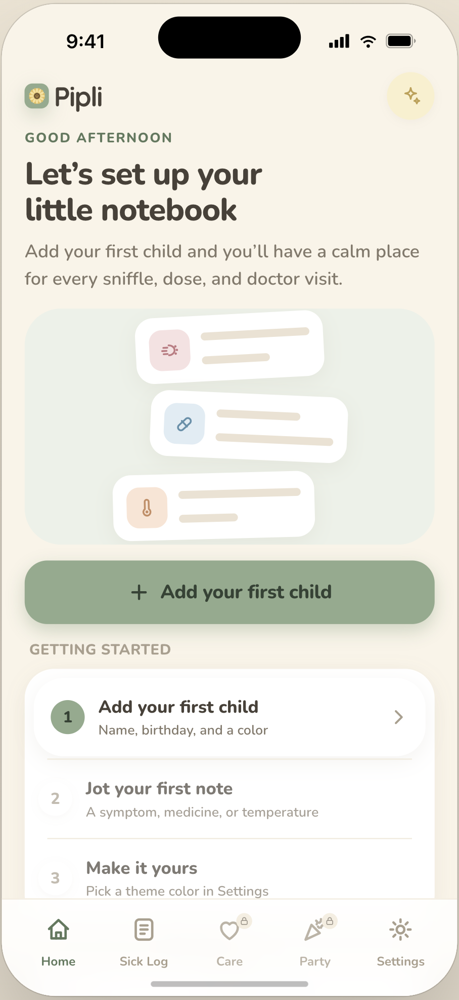
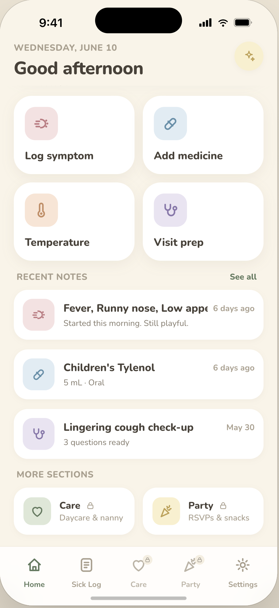
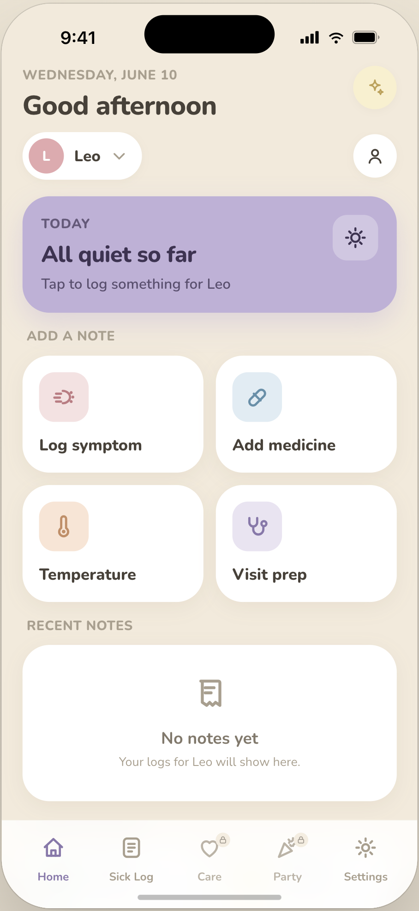

Quick capture
One-tap entries for logging a symptom, medicine, or temperature. Adding a note takes seconds, so it actually gets done in the moment.

Family Care
A mobile app concept for parents and caregivers to log medicine, incidents, naps, food, potty notes, and daily care updates in one simple timeline. Designed to make handoffs between parents, nannies, grandparents, and daycare easier, clearer, and less stressful.
Overview
A calm place to write down the small things, so the next person caring for a child always knows what happened.
Caring for a child is rarely a solo job. Parents, partners, nannies, grandparents, and daycare all share the load, but the details that matter most often live in scattered texts, sticky notes, and memory. Pipli pulls medicine doses, symptoms, temperatures, naps, food, and daily notes into one shared timeline.
The goal is not another tracking chore. It's a low-effort, low-stress way to capture a moment and hand off care cleanly, especially when a child is sick or seeing a doctor.
The problem
Handoffs between caregivers are fragmented and stressful, and the details that matter get lost between people.
When a child is passed between a parent, a nanny, and a grandparent in a single day, important context travels poorly. When did they last take medicine? How high was the fever? Did they nap, eat, and seem themselves? The information exists, but it's spread across people and apps, and it's hard to trust under pressure.
What I designed
Pipli is organized around a few calm, focused experiences that share one consistent shell.
One-tap entries for logging a symptom, medicine, or temperature. Adding a note takes seconds, so it actually gets done in the moment.
A single, readable feed of recent notes per child, so anyone caring for them can catch up at a glance instead of asking around.
Notes roll up into doctor-ready summaries, turning a week of small observations into clear questions and history for an appointment.



My role
I led product strategy, UX, visual design, and the AI-assisted build for the concept.
Key product decisions
The home screen leads with four large actions, Log symptom, Add medicine, Temperature, and Visit prep, so the most common notes are always one tap away. The faster capture feels, the more reliably the timeline reflects reality.
Health apps tend to feel sterile and alarming. Pipli uses warm, soft tones, friendly type, and gentle empty states like "All quiet so far" so logging a sick day feels reassuring rather than stressful.
Each child has their own profile and timeline, switchable from the top of the home screen. The structure is built so notes can be shared cleanly with anyone helping out, which is the core of the handoff idea.
Current status
The core experience, onboarding, home, quick capture, and timeline, is designed and prototyped. Care and Party sections are scaffolded for a later phase.
Next is pressure-testing the handoff flow with real caregivers, expanding the Sick Log and Visit prep summaries, and exploring how sharing works between people who care for the same child.
Pipli is where I bring product strategy, UX, and hands-on building together around a real family problem. Want a closer look at the flows behind it?